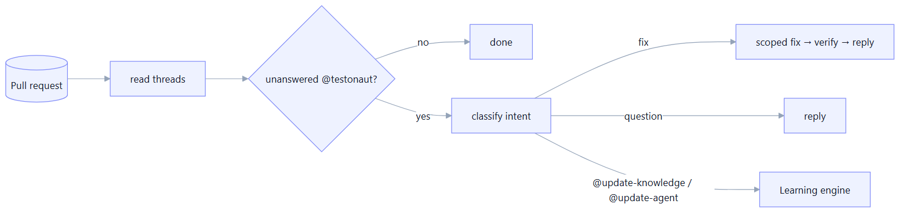
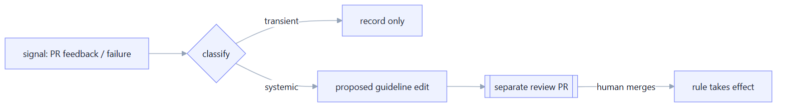

PR Feedback & Learning
Manso listens to pull-request comments, applies scoped fixes, and turns durable corrections into reviewable guideline changes — so the agent improves with use instead of repeating mistakes.
Overview
The respond-to-pr verb reads a PR's comment threads, finds the latest unanswered comment that
addresses @manso, classifies its intent, and either applies a small, feedback-scoped fix
(re-verifying and replying with the result) or posts a reply. Triggered by an Azure DevOps service hook or a
GitHub webhook → pipeline, it closes the human-in-the-loop cycle.

Mentions & intent classification
The Responder parses each thread's latest comment for the configured mention handle
(pr.mention, default @manso) and classifies the intent — a fix request, a
question, or a knowledge-update directive. Classification decides whether the code agent runs or a reply
suffices.
Feedback-scoped fixes
When a comment asks for a change, the Responder runs the code agent with a narrow prompt built from that feedback (not a full re-implementation), re-runs the verify command, and replies in-thread with the outcome. MCP tools and the same sandbox profile apply as in implementation.
How it works
- Build a fix prompt scoped to the thread's instruction.
- Run the agent; detect changed files.
- Re-verify; reply with the verify result (and what changed).
Loop safety
An agent that answers its own comments would loop forever. The Responder is guarded: it never acts
on its own (marker-tagged) comments, skips threads whose latest comment is already a Manso reply,
and stops at a PR-wide iteration budget (pr.maxIterationsPerPr).
Learning engine
Corrections shouldn't be one-offs. The Learning Engine classifies a signal (PR feedback,
heal failure, verify failure) as transient or systemic, and records a
LearningRecord. Systemic learnings become proposed guideline edits — but are never applied
silently; they always go through a separate, human-reviewed pull request.

Knowledge-update triggers
Two explicit PR-comment handles let a reviewer turn a correction into a durable rule:
| Handle | Scope | Targets |
|---|---|---|
@update-knowledge <rule> | project | This repo's .agents/guidelines/ |
@update-agent <rule> | agent | The Manso repo's proposed-guidelines/ (via MANSO_AGENT_REPO) |
Both only ever propose via a review PR — the reviewer's text is untrusted and is never applied automatically.
Guideline-proposal PRs
The proposer writes the new rule into the appropriate guidelines/*.md, commits it on a dedicated
branch, and raises a PR through the same VcsAdapter (so it works on Azure or GitHub, with
token-based push). The PR description cites the source learnings, making the behaviour change auditable before
it ever influences future test generation.